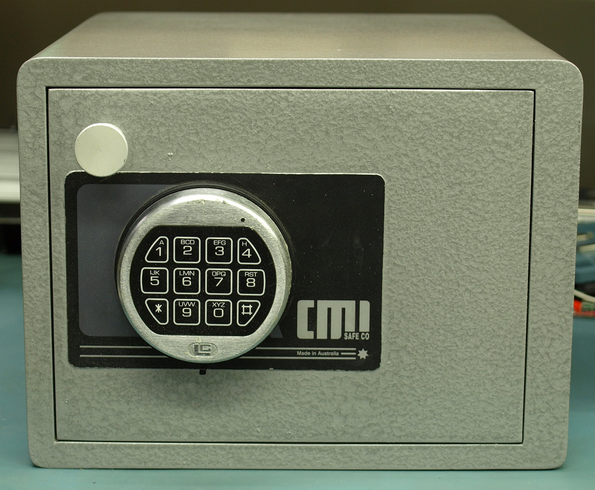
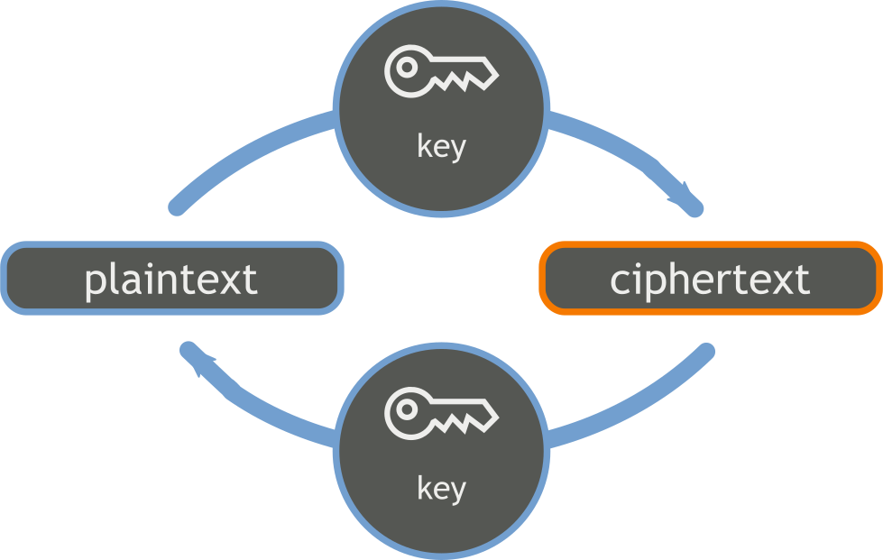
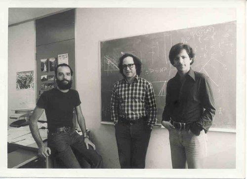

Introduction to cryptography
Jesse van Bekkum
History
Letter substitution
- ROT-Thirteen
- Ceasar Cypher
- Enigma Machine
Confidentiality
Integrity
Availability
Non repudiation
Symmetric & Asymmetric
Symmetric
Asymmetric
Practice
Symmetric algorithms
Block ciphers and stream ciphers
AES
Advanced Encryption StandardDES and Triple-DES
Asymmetric algorithms

RSA
Invented by Ron Rivest, Adi Shamir and Leonard Adleman RSA
Easy:
$$p \times q \rightarrow pq$$Difficult:
$$p q \rightarrow p \times q$$Others
- Diffie-Hellman
- ElGamal
- Elliptic Curve
Hashing
Collisions
$$ xebia \rightarrow aad3fcfa3352b57afd6aee013ccd69cb $$ $$ Xebia \rightarrow 13f6a4bf6b2198a589dae92526c4b93a $$
Demo
md5 = e06723d4961a0a3f950e7786f3766338
From http://natmchugh.blogspot.nl/2014/10/how-i-created-two-images-with-same-md5.html
Files
Passwords

- Files
MD5SHA-1- SHA-256
- Passwords
- BCRYPT
- PBKDF2
- Password-Based Key Derivation Function 2
Salt
Solution: Make each password unique
$$hash(secret + o4wj) \neq hash(secret + re9g)$$Random number generators

Secure
Unpredictable
Based on external signals (network, mouse, keyboard)
Unsecure / Unblocking
Fast
Based on predictable seed, such as timestamp (in Java)
Implementation
Implementing cryptograpy protocols is DIFFICULT
Transport Layer Security & Secure Socket Layer
Never implement your own encryption
Use BCrypt
Use SHA-256
Use SecureRandom
Started 31 July
Six weeks
Used images:
- "Australian Made CMI H2D Home Safe" by Binarysequence
Own work. Licensed under CC BY-SA 4.0 via Wikimedia Commons
https://commons.wikimedia.org/wiki/File:Australian_Made_CMI_H2D_Home_Safe.JPG
- "Padlock klódka ubt".
Licensed under CC BY-SA 3.0 via Wikimedia Commons
https://commons.wikimedia.org/wiki/File:Padlock_kl%C3%B3dka_ubt.JPG - By Hein waschefort (Own work) [CC BY-SA 3.0 (http://creativecommons.org/licenses/by-sa/3.0)], via Wikimedia Commons
- By Diacritica (Own work)
[CC BY-SA 3.0 (http://creativecommons.org/licenses/by-sa/3.0)], via Wikimedia Commons - By Dubravko Sorić SoraZG on Flickr
[CC BY 2.0 (http://creativecommons.org/licenses/by/2.0)], via Wikimedia Commons - By Frettie (Own work)
[GFDL (http://www.gnu.org/copyleft/fdl.html) or CC BY 3.0 (http://creativecommons.org/licenses/by/3.0)], via Wikimedia Commons - By Bananenfalter (Own work) [CC0], via Wikimedia Commons
- By Alan Turing Created in vector format by Scewing (RR Auctions) [Public domain], via Wikimedia Commons